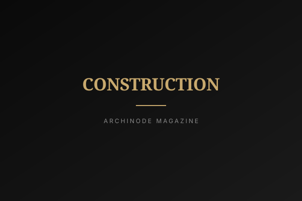

국토교통부가 9월 15일 분양가상한제 적용 기본형건축비를 ㎡당 223만 7,000원에서 232만 8,000원으로 올렸다. 16~25층 이하, 전용 60~85㎡ 지상층 기준으로 4.07% 인상이다. 인상분의 대부분은 간접공사비에서 나왔고, 정부는 그 배경으로 공사 全단계 안전투자 지원 강화를 들었다. 명분은 안전인데, 돈이 흐르는 경로를 따라가 보면 이야기가 조금 달라진다.
두 달 만에, 다시
이번 고시의 직전 조정은 불과 두 달 전인 7월 15일 비정기고시였다. 비정기 인상 위에 정기 인상이 곧바로 얹힌 셈이다. 4.07%를 밀어올린 항목은 뚜렷하다. 간접공사비가 ㎡당 60만 4,000원에서 66만 3,000원으로 9.77% 뛰었다. 조달청이 정한 2026년 원가계산 간접공사비 적용기준에서 간접노무비 요율이 14.6%에서 18.1%로, 기타경비 요율이 6.0%에서 6.9%로 올라간 결과다.
적용 대상은 9월 15일 이후 입주자모집 승인을 신청하는 단지다. 이미 공고가 나간 단지는 해당이 없다. 그리고 여기서 짚어야 할 게 하나 있다. 원가계산 기준의 요율은 발주처가 공사비를 산정할 때 쓰는 계산 규칙이지, 시공사가 그 돈을 어디에 쓸지 묶어두는 장치가 아니다. 요율은 상한을 올릴 뿐, 지출을 강제하지 않는다.

"간접노무비 요율이 3.5%포인트 올랐다고 해서, 현장 안전관리자가 그만큼 늘어난다는 보장은 어디에도 없다."
4% 올랐다는 말이, 분양가 4%라는 뜻은 아니다
청약을 기다리는 사람이 가장 먼저 하는 계산은 그래서 내 분양가가 4% 오르나다. 결론부터 말하면 아니다. 분양가는 땅값(택지비)과 건축비를 더해 정해지고, 건축비는 다시 기본형건축비와 가산비로 나뉜다. 이번에 오른 건 그중 기본형건축비 하나다. 전체를 구성하는 여러 덩어리 가운데 일부가 4% 오른 것이니, 총액이 4% 오를 수는 없다.
특히 땅값이 비싼 수도권 인기 지역일수록 분양가에서 택지비가 차지하는 몫이 커진다. 같은 4.07%라도 땅값이 센 곳에서는 최종 분양가에 미치는 영향이 더 희석되고, 땅값이 상대적으로 낮은 지역일수록 영향이 커진다. 다만 그 비중은 단지마다 달라서 하나의 숫자로 못 박을 수 없다. 체감 시점도 당장은 아니다. 9월 15일 이후 입주자모집 승인을 신청하는 단지부터이니, 지금 공고가 떠 있는 단지를 들여다보고 있다면 이번 인상과는 무관하다.
현장에서 이 돈은 어디로 가나
간접노무비는 벽을 쌓고 배관을 까는 인력이 아니라 현장소장, 안전관리자, 품질관리자처럼 직접 시공에 투입되지 않는 인력의 인건비다. 요율이 올랐다는 건 이런 관리 인력을 더 두고도 원가 산정에서 인정받을 여지가 생겼다는 뜻이다. 실제로 사람을 더 뽑을지는 별개다. 현장에서 관리 인력은 늘 줄이면 바로 이익이 되는 항목이었고, 그 유인이 사라진 것은 아니다.

게다가 지금 시장은 천장을 올려줘도 채울 일감이 부족하다. 올해 7월 건설수주는 15조 8,000억 원으로 1년 전보다 30.6% 줄었다. 전월 대비로도 24.5% 감소, 공공이 21.9%, 민간이 33.3% 빠졌다. 반면 같은 달 건설기성은 11조 7,000억 원으로 2.4% 늘었다. 지금 돌아가는 현장은 과거에 따낸 물량이고, 내년 이후 일감이 비어 있다는 신호다. 자재·창호·마감재 공급사가 긴장하는 지점도 여기다. 총액 한도가 늘어난 만큼 단가에 숨통이 트일 수도 있지만, 발주 자체가 줄어든 국면에서는 늘어난 간접비를 맞추느라 직접공사비, 즉 자재와 노무 단가부터 눌리는 쪽이 훨씬 익숙한 풍경이다.
올린 천장, 비어 있는 뒷단
분양가상한제에서 올라간 금액은 발주처가 시공사에 건네는 대가가 아니다. 사업주체가 수분양자에게 받을 수 있는 천장이다. 돈을 받는 쪽과 안전에 돈을 써야 하는 쪽 사이에 연결 고리가 없다. 인상분이 실제 안전 투자로 집행됐는지 확인하는 사후 검증 절차도, 보고 의무도, 미집행분을 환수하는 규정도 이번 고시에는 없다. 그래서 남는 건 구조다. 분양가상한제는 무주택 실수요자를 위해 분양가를 억누르려고 만든 제도인데, 그 상한이 올라가면 비용은 청약에 기대는 사람에게 간다. 안전이라는 공적 가치의 값을, 자산이 가장 적은 쪽이 먼저 치르는 셈이다.
편집장 코멘트
ARCHINODE 독자에게 이번 고시는 단가가 조금 올랐다는 뉴스가 아니다. 건축가와 설계사무소에는 안전·품질 관리 인력을 원가에서 방어할 근거가 하나 생겼다는 뜻이고, 건축주에게는 같은 4.07%가 사업지의 땅값에 따라 전혀 다르게 작동한다는 뜻이다. 자재 브랜드라면 간접비 인상이 직접공사비 압박으로 되돌아오는 국면을 전제하고 단가 협상 시나리오를 미리 짜두는 편이 낫다. 수주가 30% 빠진 시장에서 상한선 조정은 기회가 아니라 조건일 뿐이다.